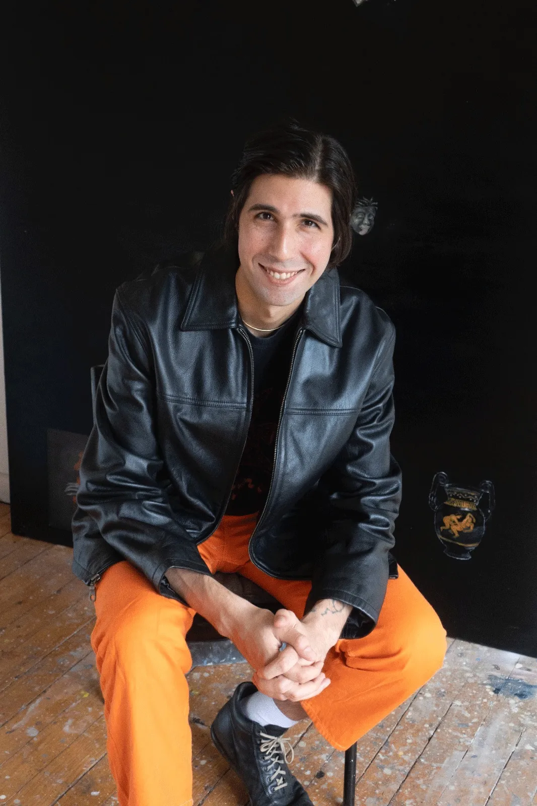

<!doctype html><html lang="tr"><meta charset="utf-8"><meta name="viewport" content="width=device-width,initial-scale=1"><title>Works - TARIK TÖRE, CASPAR DAVID FRIEDRICH NIETZSCHE GUEVARA | PILEVNELI</title><style>body{margin:0;background:#f6f5f1;color:#1d2327;font:16px/1.6 system-ui,sans-serif}main{max-width:1100px;margin:auto;padding:36px 28px}a{color:#244e8b}h1{font-size:32px;line-height:1.25}img{max-width:100%;height:auto}nav,.notice{padding:14px 20px;background:white;border:1px solid #ddd;border-radius:8px;margin:0 0 24px}nav{display:flex;gap:24px;flex-wrap:wrap}.records_list ul{list-style:none;padding:0;display:grid;grid-template-columns:repeat(auto-fit,minmax(260px,1fr));gap:24px}.records_list li{background:white;padding:16px}.image img{max-height:600px;object-fit:contain}.clear{clear:both}button,input,select{font:inherit;padding:9px 14px;border:1px solid #bbb;border-radius:6px}button{cursor:pointer;background:white}small{color:#667}table{width:100%;border-collapse:collapse}td,th{text-align:left;padding:10px;border-bottom:1px solid #ddd}.tag{font-size:12px;border-radius:5px;padding:3px 8px;background:#e5ebe5}pre{white-space:pre-wrap}</style><main><nav><a href="../arsiv.html">← Arşiv dizini</a><a href="https://web.archive.org/web/20220522192857/https://www.pilevneli.com/exhibitions/60/works/image3958/">Wayback kopyası</a><a href="../texts/f96c91279cb96fa7.txt">Düz metin</a></nav><h1>Works - TARIK TÖRE, CASPAR DAVID FRIEDRICH NIETZSCHE GUEVARA | PILEVNELI</h1><div class="content_alt clearwithin" id="content">
<div class="subsection-works">
<div class="artwork_detail_wrapper site-popup-enabled-content" data-pageload-popup-fallback-close-path="/exhibitions/60/works/">
<div class="clearwithin record-layout-standard artwork image_gallery_has_caption" id="image_gallery">
<div class="draginner">
<div id="image_container_wrapper">
<div class="" data-record-type="artwork" id="image_container">
<span class="image"><span>

</span></span>
</div>
</div>
<div class="clearwithin" id="content_module">
<div class="detail_view_module">
<h5>SO META, 2020</h5><p> </p><p>Mixed media on canvas</p><p>55 x 45 cm</p><p> </p>
</div>
<!--excludeindexstart-->

<div class="link share_link popup_vertical_link retain_dropdown_dom_position" data-link-type="share_link">
<a aria-expanded="false" aria-haspopup="true" href="#" role="button">Share</a>
<div class="popup_links_parent" id="social_sharing">
<div id="relative_social_sharing">
<div class="popup_vertical dropdown_closed addthis_toolbox popup_links" id="social_sharing_links">
<ul>
<li class="social_links_item">
<a class="addthis_button_facebook" href="https://www.facebook.com/sharer.php?u=http://www.pilevneli.com/exhibitions/60/works/image3958/" target="_blank">
<span class="add_this_social_media_icon facebook"></span>Facebook
                                    </a>
</li>
<li class="social_links_item">
<a class="addthis_button_twitter" href="https://twitter.com/share?url=http://www.pilevneli.com/exhibitions/60/works/image3958/" target="_blank">
<span class="add_this_social_media_icon twitter"></span>Twitter
                                    </a>
</li>
<li class="social_links_item">
<a class="addthis_button_pinterest_share" href="https://www.pinterest.com/pin/create/button/?url=https%3A//www.pilevneli.com/exhibitions/60/works/image3958/&amp;media=https%3A//artlogic-res.cloudinary.com/f_auto%2Cfl_lossy%2Cq_auto/ws-pilevneli/usr/images/exhibitions/main_image_override/60/listimage.gif&amp;description=Works%20-%20TARIK%20T%C3%96RE%2C%20CASPAR%20DAVID%20FRIEDRICH%20NIETZSCHE%20GUEVARA" target="_blank">
<span class="add_this_social_media_icon pinterest"></span>Pinterest
                                    </a>
</li>
<li class="social_links_item">
<a class="addthis_button_tumblr" href="https://www.tumblr.com/share/link?url=http://www.pilevneli.com/exhibitions/60/works/image3958/" target="_blank">
<span class="add_this_social_media_icon tumblr"></span>Tumblr
                                    </a>
</li>
<li class="social_links_item">
<a class="addthis_button_email" href="mailto:?subject=Works%20-%20TARIK%20T%C3%96RE%2C%20CASPAR%20DAVID%20FRIEDRICH%20NIETZSCHE%20GUEVARA&amp;body= http://www.pilevneli.com/exhibitions/60/works/image3958/" target="_blank">
<span class="add_this_social_media_icon email"></span>Email
                                    </a>
</li>
</ul>
</div>
</div>
</div>
</div>
<div class="page_stats pagination_controls" id="page_stats_0">
<div class="ps_links">
<div class="ps_item pagination_controls_prev"><a class="ps_link ps_previous focustrap-ignore" href="https://web.archive.org/web/20220522192857/https://www.pilevneli.com/exhibitions/60/works/images3956/">PREVIOUS</a>
</div>
<div class="ps_item sep">|</div>
<div class="ps_item pagination_controls_next"><a class="ps_link ps_next focustrap-ignore" href="8b76c9acd0086186.html">Next</a>
</div>
</div>
<div class="ps_pages">
<div class="ps_pages_indented">
<div class="ps_page_number">8 </div>
<div class="left">of
                         28</div>
</div>
</div>
<div class="clear"></div>
</div>
<!--excludeindexend-->
</div>
</div>
<div class="draginner_loader loader_basic"></div>
</div>
</div>
<div class="related_artists_container">
<div class="divider inner"></div>
<div class="related_items_panel clearwithin" id="related_artists">
<h3>RELATED ARTIST</h3>
<div class="records_list mini_list">
<ul>
<li>
<a href="31371fb7a61dbdc9.html">
<span class="icon"><span>

</span></span>
<div class="content"><h2>TARIK TÖRE</h2></div>
</a>
</li>
</ul>
</div>
</div>
</div>
</div>
<div class="back_to_link">
<div class="divider inner"></div>
<div class="link"><a href="5934ae8db3e7682b.html">BACK TO CURRENT EXHIBITIONS</a></div>
</div>
</div></main></html>